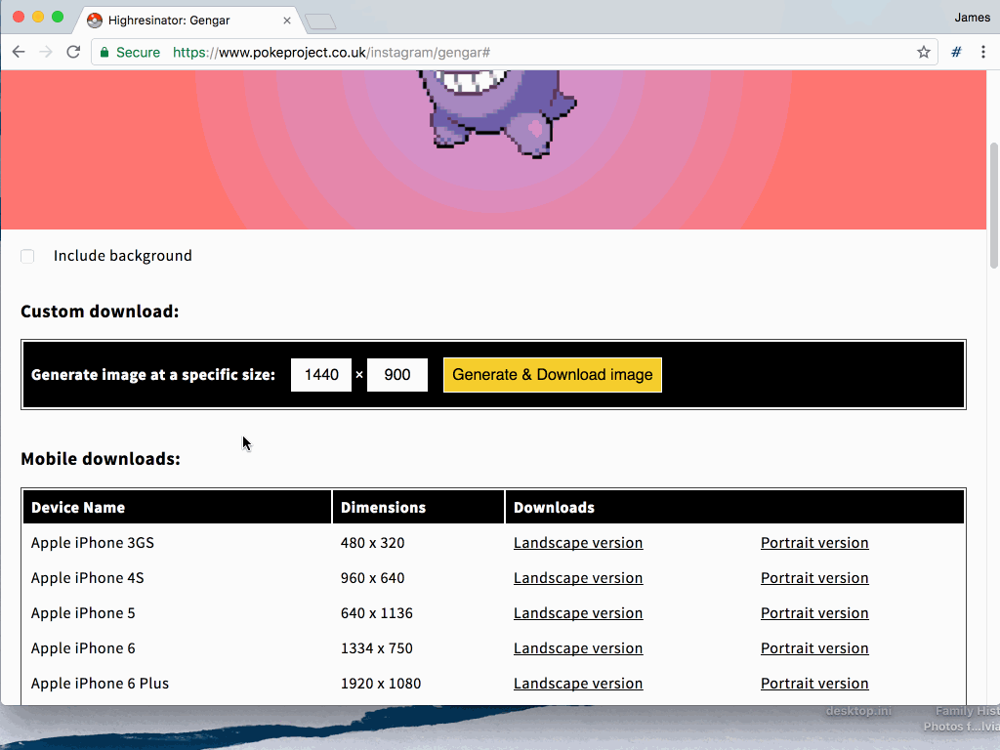
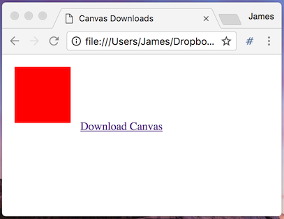
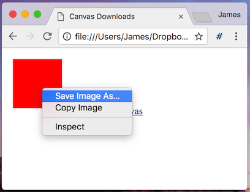
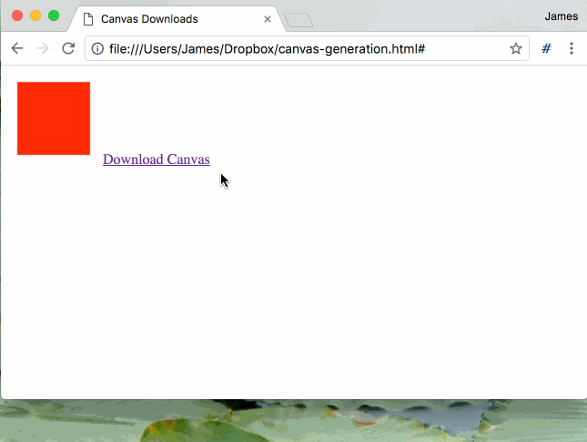
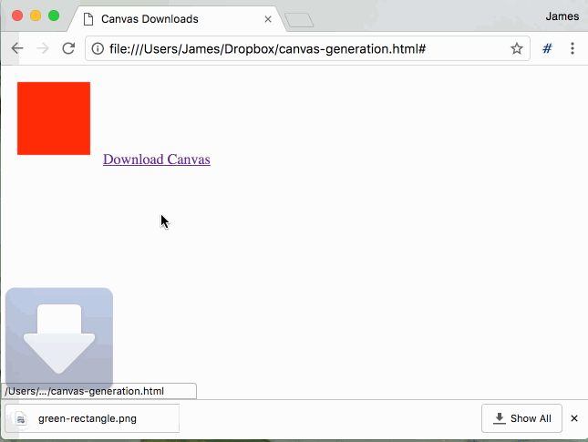

Generating images for download with HTML5 and Canvas
Summary
With a clever bit of trickery from HTML5 and JavaScript, it is possible to trigger a browser download of anything that can be generated in a canvas element, regardless of whether that element is visible or not. This works in modern browsers which support the 'download' attribute and which support the 'canvas' element.
Introduction
In most browsers a canvas image can already be natively saved through the right-click menu, and what this technique is doing is essentially automating, or forcing, this action on the users' behalf. One of the advantages with this technique - besides the improved user experience - is that you have a chance to cleanly re-render the canvas element and essentially modify the output before the browser begins saving the image.
This means you can adjust the resolution, the aspect ratio, add watermarks or even modify the image data before it's downloaded by the user. Of course, the original right-click menu and functionality still exists, so you can't use this as a method of stopping users from saving your images completely, but it does mean that you can give them a better experience using your website.
Real-world example
I've used this technique on PokéProject, with what I call the 'Highresinator'. PokéProject takes the pixel art from the original Pokémon GameBoy games, and scales it up from the original 32x32 pixel images into wallpaper backgrounds for desktop computers or mobile devices.
As you can see in the image above, as part of this process I'm generating a canvas-based preview of the wallpaper image, but that preview canvas isn't the correct resolution for any downloads. To fix this I've added a short form with download buttons, and clicking any of those buttons will generate the artwork shown on the canvas at the specified resolution.

Example code
The key steps to this process are simple. First you have to generate an off-screen canvas element, into which you draw your image, and then you create an anchor element with a download attribute, transfer the users' click event to this element, and a download will be triggered.
Let's look at some sample code.
First, we're going to need a simple website which contains a canvas element:
<html>
<head>
<title>Canvas Downloads</title>
</head>
<body>
<canvas id="myCanvas" width="100" height="100"></canvas>
<a id="downloadLink" href="#">Download Canvas</a>
</body>
</html>
Next we use JavaScript to render something simple on the canvas - a bright red box, for example:
<script>
var canvasElement = document.getElementById('myCanvas')
var drawingContext = canvasElement.getContext('2d')
drawingContext.fillStyle = '#ff0000'
drawingContext.fillRect(10, 10, 80, 80)
</script>

That works, but it's not very reusable - so let's refactor it a little:
<script>
function renderCanvas(canvasElement) {
var drawingContext = canvasElement.getContext('2d')
drawingContext.fillStyle = '#ff0000'
drawingContext.fillRect(10, 10, 80, 80)
}
var canvasElement = document.getElementById('myCanvas')
renderCanvas(canvasElement)
</script>
That's a bit more reusable - we're still doing the same actions, but we've made the canvas element that we draw to reusable.

Our users can currently right click on the canvas element and save it locally. Let's add a button which will perform this action for them automatically.
<script>
function renderCanvas(canvasElement) {
var drawingContext = canvasElement.getContext('2d')
drawingContext.fillStyle = '#ff0000'
drawingContext.fillRect(10, 10, 80, 80)
}
var canvasElement = document.getElementById('myCanvas')
renderCanvas(canvasElement)
var linkElement = document.getElementById('downloadLink')
linkElement.addEventListener('click', function() {
var newCanvas = document.createElement('canvas')
newCanvas.width = 100
newCanvas.height = 100
renderCanvas(newCanvas)
let fakeDownloadElement = document.createElement('a')
document.body.appendChild(fakeDownloadElement)
fakeDownloadElement.setAttribute('href', newCanvas.toDataURL('image/png', 1.0))
fakeDownloadElement.setAttribute('download', 'red-square.png')
fakeDownloadElement.style.display = ''
fakeDownloadElement.click()
document.body.removeChild(element)
})
</script>
That's a lot of new code, but there's a few simple steps to this process:
- We create a new canvas DOM element, which is not added to the main page DOM and therefore is not visible.
- We re-use our original canvas drawing logic, to draw a red box into our new (invisible) canvas element
- We create a hyperlink element in the page DOM, set the element URL to be an bytedata representation of the canvas element (in png format as well, for transparency)
- We set the 'download' attribute on the new element, specifying the download filename and changing the default browser behaviour and have it download the data as a file rather than trying to navigate to an URL
- We fake a click event on our new hyperlink element, to trigger the file save
- We remove the link element from the DOM and clean up afterwards

This code is currently just saving exactly what's in the canvas. Let's make things a little more interesting - we're going to change the size of the download and the colour of the box.
<script>
function renderCanvas(canvasElement, colour) {
var drawingContext = canvasElement.getContext('2d')
drawingContext.fillStyle = colour
drawingContext.fillRect(10, 10, canvasElement.width - 20, canvasElement.height - 20)
}
var canvasElement = document.getElementById('myCanvas')
renderCanvas(canvasElement, '#ff0000')
var linkElement = document.getElementById('downloadLink')
linkElement.addEventListener('click', function() {
var newCanvas = document.createElement('canvas')
newCanvas.width = 320
newCanvas.height = 240
renderCanvas(newCanvas, '#00ff00')
let fakeDownloadElement = document.createElement('a')
document.body.appendChild(fakeDownloadElement)
fakeDownloadElement.setAttribute('href', newCanvas.toDataURL('image/png', 1.0))
fakeDownloadElement.setAttribute('download', 'green-rectangle.png')
fakeDownloadElement.style.display = ''
fakeDownloadElement.click()
document.body.removeChild(element)
})
</script>
What we've done here is change the render function slightly, so that it takes a colour parameter to the render function, and we've changed the box drawing logic, so that it draws a rectangle inside the edges of the canvas, regardless of the canvas size.
A user will now see a preview of a red box, but if they click on the download link, they'll get a green rectangle downloaded instead. They could still click on the original canvas and save that of course, but that's not the point of this exercise, and there are other ways of preventing that behaviour.

We've achieved all of this on the client-side - no server-based image generation at all. This is the logic which underpins the wallpaper downloads of PokéProject [link], which has a number of pre-set image download links at fixed and custom resolutions.